FoleyForge: Free-form, Controllable, Rectified-flow Editing of Sound Effects
Giovana Morais1,2,
Hugo Flores García1,
Prem Seetharaman1,
Johannes Imort1,
Justin Salamon1,
Magdalena Fuentes2,
Oriol Nieto1
1Adobe, 2New York University
Abstract
We present FoleyForge, a generative model for instruction-based editing of sound effects. Given an input clip and a free-form instruction describing the desired change, it applies the edit while preserving the input's identity. A single model handles semantic, stylistic, and DSP-like changes. We introduce a data pipeline that guides an audio language model to author both DSP-based acoustic edits and similarity-preserving semantic edits, thus addressing the lack of publicly available audio editing data. Such data is then used to fine-tune a rectified-flow audio generation model, which we extend to expose attribute controls for loudness change, edit strength, and an input-derived contour envelope, each tunable via classifier-free guidance, yielding a more expressive editing model. FoleyForge achieves state-of-the-art instruction adherence at competitive audio quality and source faithfulness.
Results
Each row shows the edit instruction, followed by the input clip and the output of every system for that instruction.
“Replace the short, sharp barks with a long, drawn-out howl, like a wolf calling out in the forest.”
Input caption: "Dog barking in woods"
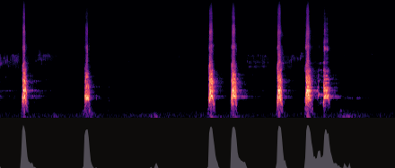
Input
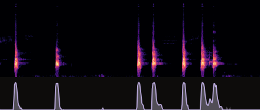
SAO-Instruct
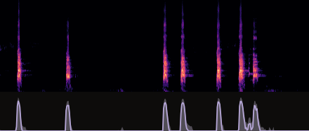
EchoEdit+
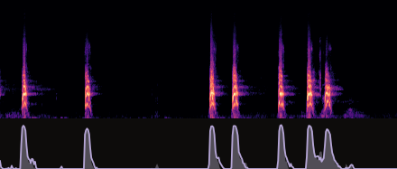
Base GenSFX SDEdit+RMS
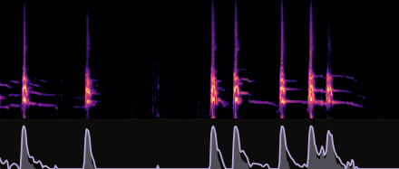
FoleyForge (ours)
“I want this to sound like a sci-fi gun”
Input caption: "Distant AK47 bursts"
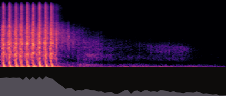
Input
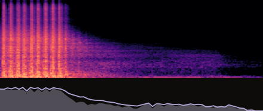
SAO-Instruct
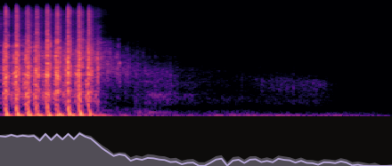
EchoEdit+
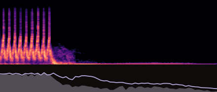
Base GenSFX SDEdit+RMS
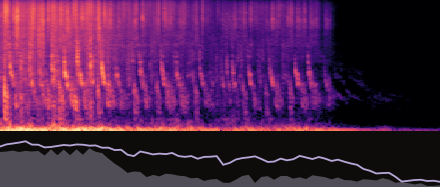
FoleyForge (ours)
“Give this a much darker and scarier atmosphere.”
Input caption: "Source Wind Blowing Howl Cold Winter Analog 08"
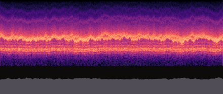
Input
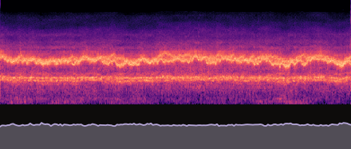
SAO-Instruct
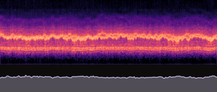
EchoEdit+
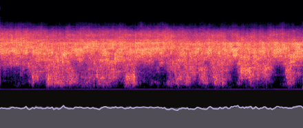
Base GenSFX SDEdit+RMS
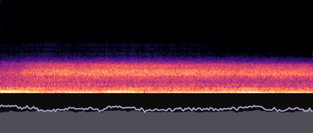
FoleyForge (ours)
“Make it sound like wood”
Input caption: "metal hits"
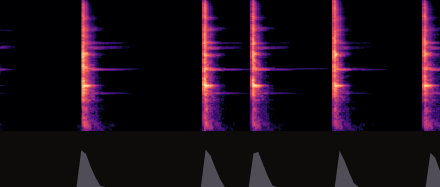
Input
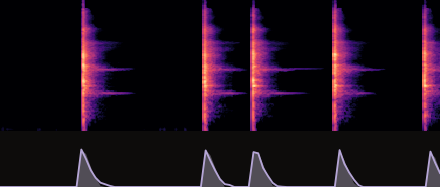
SAO-Instruct
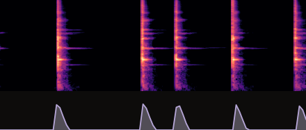
EchoEdit+
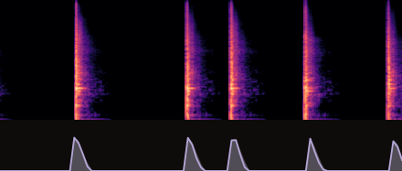
Base GenSFX SDEdit+RMS
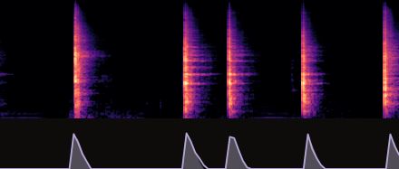
FoleyForge (ours)
“Make it sound underwater”
Input caption: "rifle"
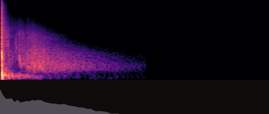
Input
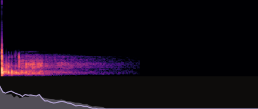
SAO-Instruct
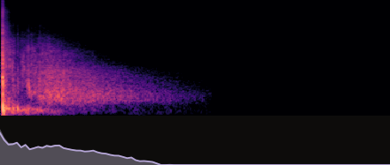
EchoEdit+
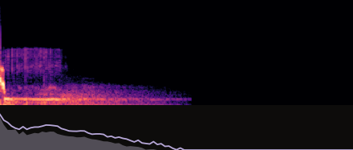
Base GenSFX SDEdit+RMS
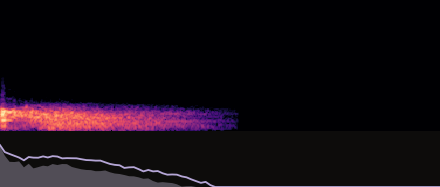
FoleyForge (ours)
Ablations
For a single pair of input audio and edit instruction, we show
Input audio:
Input caption: "Deep seal groan"
Edit Instruction: "Make it sound like it's coming from the bottom of the ocean"
Loudness (envelope off)
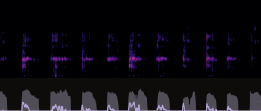
-24 dB
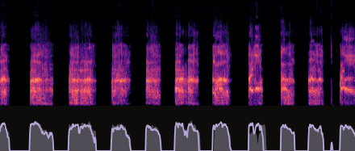
0 dB
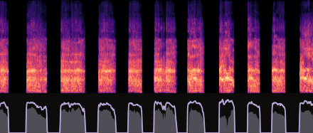
+24 dB
SILA (envelope off)
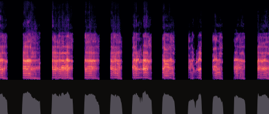
None
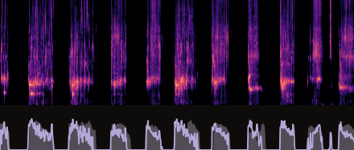
Subtle
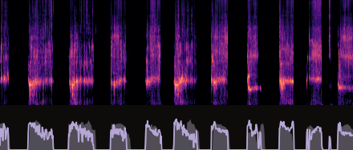
Moderate
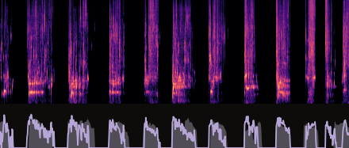
Pronounced
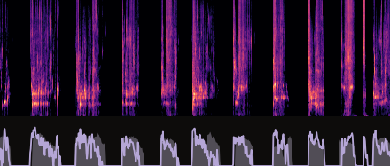
Drastic
Edit Strength (envelope off)
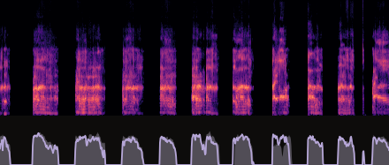
0
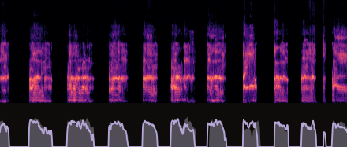
0.3
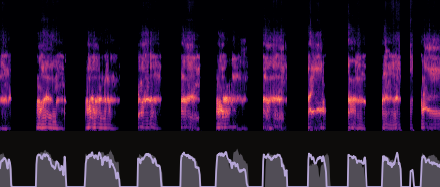
0.6
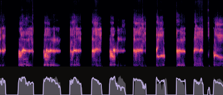
1
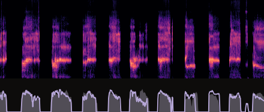
1.5
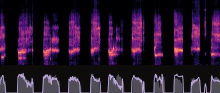
2
Model Comparison
Each block shows the edit instruction, followed by the input clip and the output of every system for that instruction.
Input
SAO
EchoEdit+
SDEdit+Sketch
FoleyForge (ours)
Instruction: Distant, submerged vibe
Instruction: Make the creaking sound much heavier and deeper, like the massive wooden timbers of a giant ship groaning loudly.
Instruction: Give it a distant, filtered sound.
Instruction: Make the insect sound like a much larger, heavier bug by drawing out the wingbeats so you can hear each individual flap instead of a fast buzz.
Instruction: Cut the low-end rumble with a high-pass filter to shift the texture from heavy rocks to lighter, thinner gravel.
Instruction: Make it sound much closer and more threatening.
Instruction: Make this sound like a wet, fleshy stab.
Instruction: Make the farting noise sound more intense and aggressive, like the bag is being squeezed much harder to push the air out.
Instruction: Make the impacts sound firmer and slightly bouncier, like the jar is being struck by a solid rubber mallet instead of a soft one.
Instruction: Make the beep wobbly and psychedelic.
Instruction: Add a large hall reverb with a long decay time to create a cavernous, echoing impression of the pouring oil.
Instruction: Make it sound like it's coming from the bottom of the ocean.
Instruction: More aggressive and immediate impact.
Instruction: Replace the short, sharp barks with a long, drawn-out howl, like a wolf calling out in the forest.
Instruction: I want this to be splashier
Cite
If you find anything here useful, consider citing our work